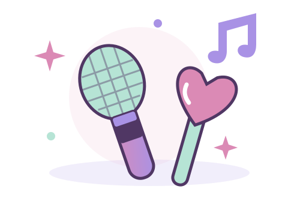

ESPAÑOL / 5. LUOKKA / KAPPALEET 11–12
Jäätelöbaari
12 jäätelömakua, tilaaminen ja pienet jäätelökeskustelut.
20 tehtävää · oma tahti · yhteiset K-pop-kortit

HARJOITTELUSTA PALKINNOKSI
Oma korttibuusterisi
Harjoitus tehty! Valitse yksi viidestä uudesta kortista yhteiseen kokoelmaasi.
HARJOITUSPOLKU / PHOTO SERIES
OIVALLUSBOOSTER5 KORTTIA · VALITSE 1
TUIDE · ILLIT · TWICE
BLACKPINK · aespa
Jokainen yritys vahvistaa taitojasi.